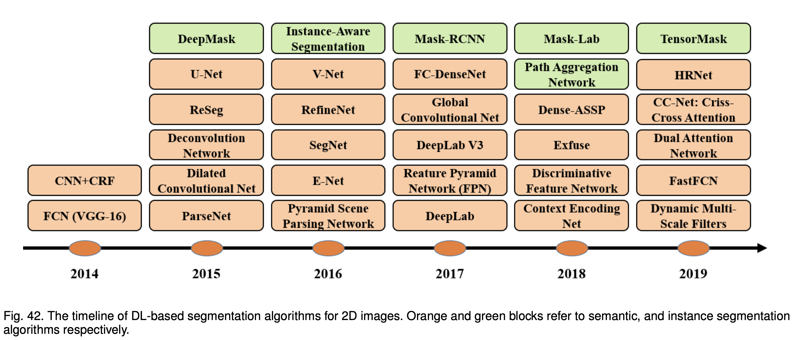

extensive This work is for spatio-temporal graph data, and this U-shaped network used a paired sampling operation in spacetime domain accordingly.
comment This can be used for segmentation.
extensive This work ONLY used 2D conv and 3D conv to extract teporal and spatial features, respectively. And it can be further combined with LSTM-Conv with boosted performance.
useful professional items elementwise; receptive field; pixel-wise predictions; Skip connections combine coarse, high-level defaultrmation and fine, low-level information;
Fully Convolutional Networks first work; not fast enough for real-time inference, it does not take into account the global context information in an efficient way, and it is not easily transferable to 3D images
Convolutional Models With Graphical Models integrate more context;
incorporate probabilistic graphical models, such as Conditional Random Fields (CRFs) and Markov Random Field (MRFs), into DL architectures; poor localization property of deep CNNs (responses from the final layer of deep CNNs are not sufficiently localized for accurate object segmentation (due to the invariance properties that make CNNs good for high level tasks such as classification))；Encoder-Decoder Based Models
SegNet: The main novelty of SegNet is in the way the decoder upsamples its lower resolution input feature map. specifically, it uses pooling indices computed in the max-pooling step of the corresponding encoder to perform non-linear upsampling. This eliminates the need for learning to up-sample. SegNet is also significantly smaller in the number of trainable parameters than other competing architectures. HRNet: maintains high-resolution representations through the encoding process by connecting the high-to-low resolution convolution streams in parallel, and repeatedly exchanging the information across resolutions U-net: Feature maps from the down-sampling part of the network are copied to the up-sampling part to avoid losing pattern information. V-Net: introduced a new objective function based on the Dice coefficient, enabling the model to deal with situations in which there is a strong imbalance between the number of voxels in the foreground and background.Multi-Scale and Pyramid Network Based Models
Multi-scale analysis, a rather old idea in image processing, has been deployed in various neural network architectures. One of the most prominent models of this sort is the Feature Pyramid Network (FPN) proposed by Lin. The apparent spatial resolution of convolutional feature maps is low, the high-dimensional feature representation contains significant sub-pixel localization information.R-CNN Based Models (for Instance Segmentation)
Mask R-CNN: essentially a Faster RCNN with 3 output branches (Figure 19)—the first computes the bounding box coordinates, the second computes the associated classes, and the third computes the binary mask to segment the object. It is worth noting that there is another promising research direction that attempts to solve the instance segmentation problem by learning grouping cues for bottom-up segmentation.Dilated Convolutional Models and DeepLab Family
Dilated convolution: to address the decreasing resolution in the network (caused by max-pooling and striding). Atrous Spatial Pyramid Pooling (ASPP): probes an incoming convolutional feature layer with filters at multiple sampling rates, thus capturing objects as well as image context at multiple scales to robustly segment objects at multiple scales. Improved localization of object boundaries by combining methods from deep CNNs and probabilistic graphical models.Recurrent Neural Network Based Models
RNNs are useful in modeling the short/long term dependencies among pixels to (potentially) improve the estimation of the segmentation map. Using RNNs, pixels may be linked together and processed sequentially to model global contexts and improve semantic segmentation. One challenge, though, is the natural 2D structure of images. Liang et al.: Instead of evenly dividing an image to pixels or patches in existing multi-dimensional LSTM structures (e.g., row, grid and diagonal LSTMs), they take each arbitrary-shaped superpixel as a semantically consistent node, and adaptively construct an undirected graph for the image, where the spatial relations of the superpixels are naturally used as edges.Attention-Based Models
Attention mechanisms have been persistently explored in computer vision over the years, and it is therefore not surprising to find publications that apply such mechanisms to semantic segmentation.Generative Models and Adversarial Training
Since their introduction, GANs have been applied to a wide range tasks in computer vision, and have been adopted for image segmentation too.CNN Models With Active Contour Models
The exploration of synergies between FCNs and Active Contour Models (ACMs) [7] has recently attracted research interest. Callenges More Challenging Datasets; Interpretable Deep Models; Weakly-Supervised and Unsupervised Learning; Real-time Models for Various Applications; Memory Efficient Models;
comment It is worth mentioning that some of these works, use data augmentation to increase the number of labeled samples, specially the ones which deal with small datasets (such as in medical domain).
Some typical transformations include translation, reflection, rotation, warping, scaling, color space shifting, cropping, and projections onto principal components. For some small datasets, data augmentation has been shown to boost model performance more than 20%. Collecting labeled samples for segmentation problem is problematic in many application domains, particularly so in medical image analysis.extensive/intensive This work is xx.
comment .